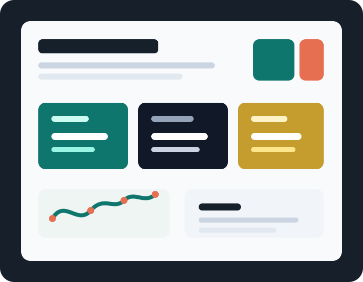

Organização de problemas
Quebro desafios complexos em etapas claras, priorizadas e fáceis de acompanhar.
Portfólio profissional
Atuo criando soluções digitais, automações e experiências que ajudam equipes a ganhar velocidade, clareza e qualidade no dia a dia.

Diferencial
Quebro desafios complexos em etapas claras, priorizadas e fáceis de acompanhar.
Construo soluções úteis, documentadas e preparadas para evolução.
Conecto tecnologia com redução de esforço, produtividade e impacto para a equipe.
Trabalhos selecionados
Substitua os exemplos abaixo pelos seus trabalhos reais do GitHub, incluindo links, capturas e resultados alcançados.
Solução para reduzir trabalho manual, padronizar etapas e tornar o acompanhamento mais rápido para a equipe.
Interface para visualizar indicadores, acompanhar prioridades e apoiar decisões com dados organizados.
Criação de uma estrutura simples para documentar entregas, reduzir retrabalho e melhorar a comunicação.
Competências
Evolução
Mapeio gargalos, tarefas repetitivas e pontos onde tecnologia pode ajudar.
Transformo ideias em protótipos, ferramentas e entregas práticas.
Comunico o impacto das entregas com clareza para líderes, pares e recrutadores.
Contato
Estou aberto a projetos, melhorias internas, colaboração com equipes e novas oportunidades de crescimento.